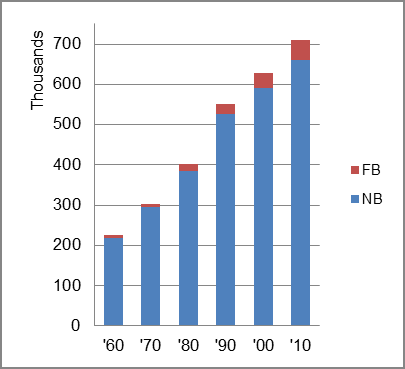

The share of the overall population that was native-born (NB) increased by 203.3 percent.
Alaska: Population 1960-2010 
The first chart below shows the three population change factors for three periods adjusted for annual average amounts. Despite a constant population loss from NDM, the population increased from the other two factors: natural change (B-D) being the primary factor adding population.
The second chart shows the same data but with an adjustment to reflect births to immigrants shifted to NIM. In it, B-D remained the primary factor adding population.
Alaska: Sources of Population Change 1990-2013 Alaska: Sources of Population Change (Adjusted) 1990-2013
B-D NDM NIM B-D NDM NIM 90-'99 89.2% neg. 10.8% 90-'99 88.8% neg. 11.2% 00-'09 89.7% neg. 10.3% 00-'09 66.9% neg. 33.1% 10-'13 80.6% neg. 19.4% 10-'13 69.7% neg. 30.3%